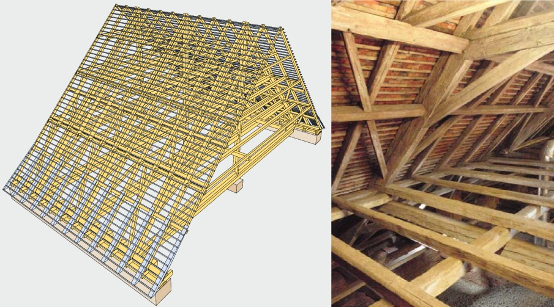

01
Zusammenhänge erkennen
Planung, Ausführung, Termine, Kosten und Schnittstellen nicht isoliert betrachten, sondern als Gesamtprojekt.
OBC steht auf der Seite des Bauherrn – unabhängig, fachlich fundiert und mit dem Blick auf das gesamte Projekt. Von der ersten Entscheidung bis zur Fertigstellung.
Planung, Ausführung, Termine, Kosten und Schnittstellen nicht isoliert betrachten, sondern als Gesamtprojekt.
Angebote, Nachträge, Leistungen und Entscheidungen technisch und wirtschaftlich plausibilisieren.
Offene Punkte konsequent verfolgen, Qualität sichern und ein Projekt geordnet zum Abschluss führen.
OBC begleitet Bauvorhaben beratend, steuernd und prüfend. Der Leistungsumfang wird projektbezogen definiert – von einzelnen Fragestellungen bis zur laufenden Bauherrenvertretung.
Technische und organisatorische Beratung vor und während des Projekts. Entscheidungen werden fachlich vorbereitet und verständlich begründet.
Projektgrundlagen klären, Varianten bewerten, Anforderungen ordnen und die nächsten sinnvollen Schritte für das Bauvorhaben festlegen.
Bestands-, Entwurfs- und Einreichplanung sowie Koordination notwendiger Fachplanungen. Weiterführende Spezialplanungen über Partnerbüros.
Plausibilisierung von Leistungsbeschreibungen, Angebotsvergleich, technische Klärungen, Vergabeunterstützung und Nachtragsbetrachtung.
Koordination der Projektbeteiligten und laufender Blick auf Qualität, Kosten, Termine, Schnittstellen, Entscheidungen und Dokumentation.
Kontrolle der Ausführung, Baufortschritt, Mängelmanagement, Rechnungs- und Leistungsprüfung sowie bautechnische Begleitung bis zum Abschluss.
TRISK, Plausibilisierung, unabhängige Baufortschrittsberichte und strukturierte Bewertung von Risiken und offenen Punkten.
Private Gutachten und Stellungnahmen zu Mängeln, Schäden, Bestandssituationen, Ausführungsfragen und Sanierungsmaßnahmen.
OBC unterstützt neben privaten und gewerblichen Bauherren auch Banken, Finanzierer, Investoren, Versicherungen und Projektträger mit unabhängigen Prüf- und Dokumentationsleistungen.
Entscheidend ist nicht die Projektgröße allein, sondern ob eine unabhängige technische, organisatorische oder baumeisterliche Begleitung einen konkreten Mehrwert schafft.
Gute Projektbegleitung heißt nicht, zusätzliche Komplexität zu schaffen. Sie soll Komplexität reduzieren, Entscheidungen vorbereiten und die richtigen Themen zum richtigen Zeitpunkt sichtbar machen.
Was ist vorhanden, was fehlt und welche Entscheidung muss tatsächlich getroffen werden?
Leistungsumfänge, Schnittstellen und Abweichungen so aufbereiten, dass ein belastbarer Vergleich möglich wird.
Qualität, Baufortschritt, Mängel, Leistungen und offene Punkte frühzeitig erkennen und dokumentieren.
Vorhandene Konstruktionen verstehen, bevor Sanierung, Umbau oder technische Eingriffe festgelegt werden.

OBC wurde von Bmstr. Dipl.-Ing. Jérôme Ortner, BSc. gegründet. Das fachliche Fundament bilden das Studium der Bauingenieurwissenschaften an der TU Graz, die Baumeisterprüfung und langjährige praktische Erfahrung in Hochbau, Bauleitung, ÖBA, Projektentwicklung, Projektsteuerung und Bauherrenvertretung.
Die berufliche Praxis reicht von privaten und öffentlichen Hochbauprojekten über GU-Bauleitung und Projektentwicklung bis zu technisch anspruchsvollen Industrie- und Pharmaprojekten. Dadurch werden Fragestellungen nicht nur aus Sicht der Planung, sondern auch aus Sicht der Ausführung und des Bauherrn betrachtet.
Im Mittelpunkt stehen belastbare Entscheidungsgrundlagen, transparente Kosten, dokumentierte Qualität und klare Verantwortlichkeiten im Interesse des Auftraggebers.
Ein besonderer fachlicher Schwerpunkt liegt im Umgang mit bestehenden und historischen Holzkonstruktionen. Bereits im Rahmen der wissenschaftlichen Tätigkeit an der TU Graz und der holz.bau forschungs gmbh erfolgte eine intensive Auseinandersetzung mit historischen Dachtragwerken, zimmermannsmäßigen Verbindungen, Bestandserfassung, Schadensanalyse und Instandsetzung.
Die Masterarbeit „Instandsetzungshandbuch für historische Dachwerke und deren Verbindungen“ sowie die Mitarbeit am Forschungsprojekt „HOLZ-HOLZ-Verbindungen“ bilden dafür eine fachlich fundierte Grundlage.

Nicht jedes Projekt benötigt alle Leistungen. OBC stellt den Leistungsumfang passend zur konkreten Aufgabenstellung zusammen.
Kurze Beschreibung des Projekts, der Fragestellung und des aktuellen Stands.
Welche Themen sind relevant, welche Unterlagen werden benötigt und welche Leistung ist sinnvoll?
Projektbezogene Bearbeitung, Koordination, Prüfung oder laufende Bauherrenvertretung.
Offene Punkte, Dokumentation, Mängel und Leistungen geordnet bis zum vereinbarten Abschluss führen.
Schreiben Sie kurz, worum es geht. OBC meldet sich mit einer ersten Einschätzung, ob und in welcher Form eine Unterstützung sinnvoll ist.